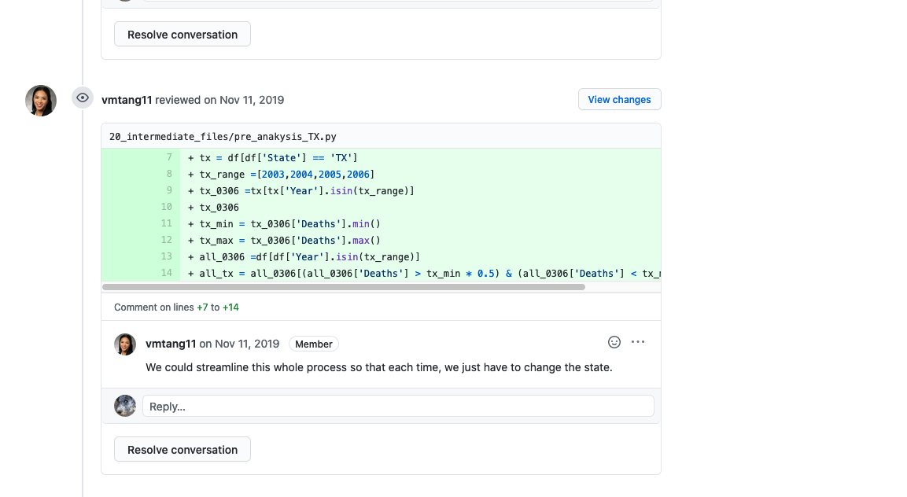
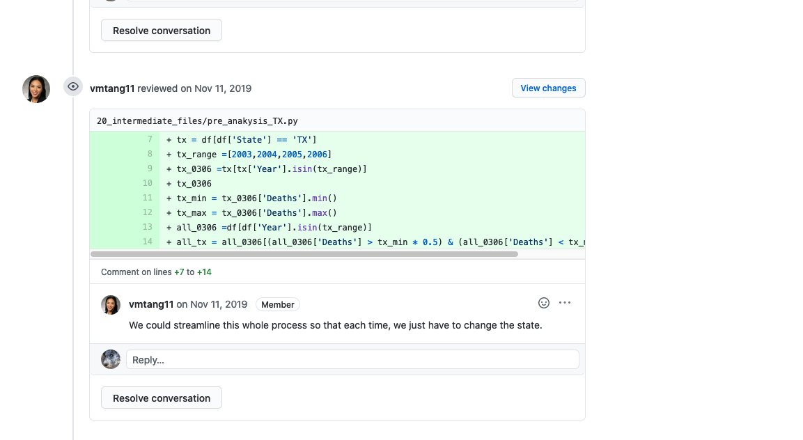
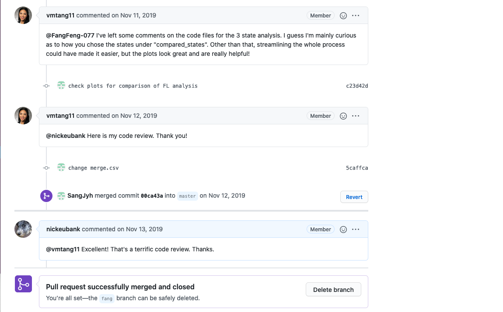
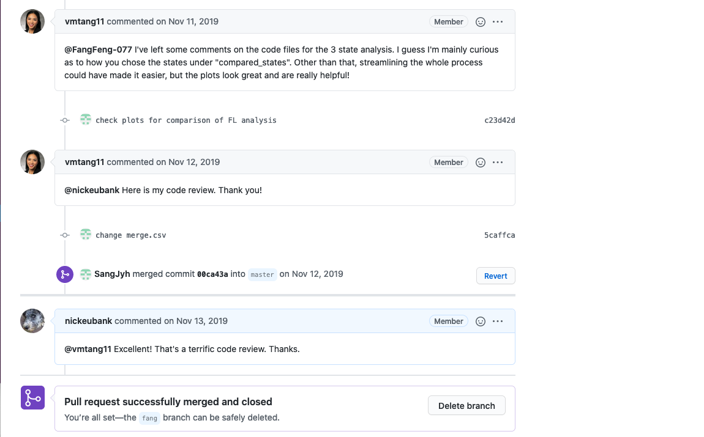

Reviewing Code on Github¶
When you are responsible for reviewing code that someone has submitted in a Pull Request (commonly just called a “PR”) on github, your job isn’t as simple as responding “looks good!”. The goal of the Pull Request process is to ensure all merged code reflects the common wisdom of the team, so its your job to actually read the code you’re reviewing and to ask questions and provide detailed comments. This may be the last time anyone looks at this code before the rest of your team builds your analysis on its output, so take your reviewer role seriously!
Seem like there’s nothing to do in your review / everything looks great? Even when people write perfect code (which is rare!), there’s almost always some room for improvement in terms of providing better comments, using variable names that are easy to understand, or just being explicit about what assumptions one is making. In a real project, of course, you don’t want to be pedantic, but for our class exercises, be sure to find something you can engage with constructively for practice.
Finally, it’s important to understand that a good PR review is an interative process, with the reviewer asking questions and the code writer responding and, usually, updating their code.
To illustrate, here’s an exceptional PR review from last year involving Sang-Jyh and Vanessa, our 2020 TA:

 
 
 
